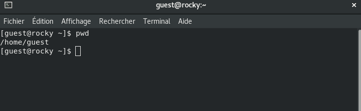
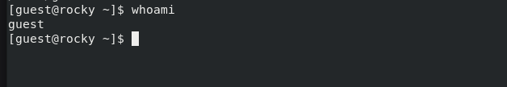

Дискреционное разграничение прав в Linux. Основные
атрибуты
Акондзо Жордани Лади Гаэл
1. Цель работы
Получение практических навыков работы в консоли с атрибутами файлов,
закрепление теоретических основ дискреционного разграничения доступа в
современных системах с открытым кодом на базе ОС Linux.
2. Выполнение лабораторной
работы
Создал учётную запись пользователя guest (использую учётную запись
администратора) с помощью команды sudo useradd guest (рис.
[-@fig:001])
Создание новой учётной
записи
Задал пароль для пользователя guest (использую учётную запись
администратора): passwd guest. (рис. [-@fig:002])
Введение пароля
Вошёл в систему от имени пользователя guest. (рис. [-@fig:003])
Вход в систему
Определил директорию, в которой вы находитесь, командой
pwd. (рис. [-@fig:004])

Определение директории
Уточнил имя пользователя командой whoami. (рис. [-@fig:005])

Уточнение имени пользователя
Уточнил имя пользователя, группу, а также группы, куда входит
пользователь, командой id. (рис. [-@fig:006])
Вывел данные пользователя
Сравнил полученную информацию об имени пользователя с данными,
выводимыми в приглашении командной строки.
Просмотрел файл /etc/passwd командой cat /etc/passwd.
(рис. [-@fig:007]),
(рис. [-@fig:008]) и
(рис. [-@fig:009])
Определил существующие в системе директории командой ls -l
/home/. (рис. [-@fig:010])
Существующие директории
Проверил установленные расширенные атрибуты на поддиректориях,
находящихся в директории /home, командой lsattr /home.
(рис. [-@fig:011])
Расширенные атрибуты
Создал в домашней директории поддиректорию dir1
командой mkdir dir1. (рис. [-@fig:012])
Создание директории dir1
Снял с директории dir1 все атрибуты командой chmod 000
dir1. (рис. [-@fig:013])
Снятие атрибутов
Попытался создать в директории dir1 файл file1 командой echo
“test” > /home/guest/dir1/file1, но отказали в доступе.
(рис. [-@fig:014])
Попытка создания файла file1
Выводы
В результате лабораторной работы мной были получены навыки работы с
атрибутами файлов, закреплены знания о правах доступа в системах на базе
ОС Linux, а также были выявлены минимальные необходимые права доступа
для выполнения операций над файлами и директориями.